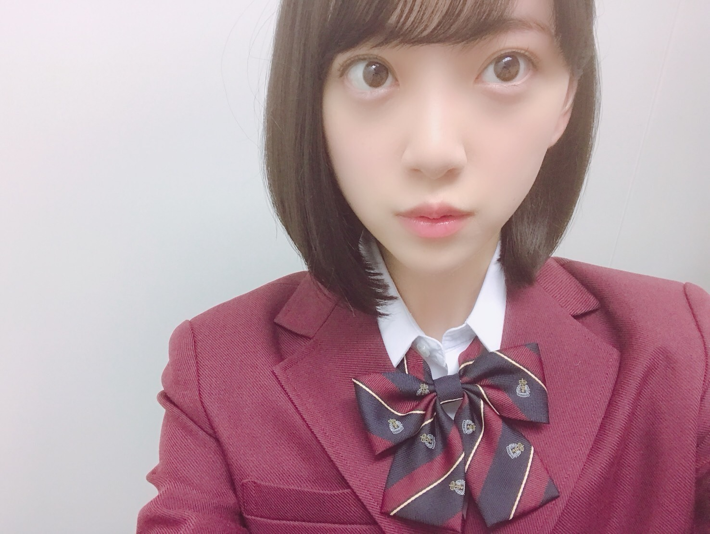

2018/1026Fri漫画みたいにいかない。第二弾
来年春に日テレで放送されるドラマ
「漫画みたいにいかない」第二弾の1話に
百川さくら役で
ゲスト出演させていただきます☺︎
皆さん本当に面白くて優しくて
コメディドラマ大好きなので
凄く幸せな現場です
頑張りますので、
是非見ていただけたら嬉しいです！
そして、新曲
「帰り道は遠回りしたくなる」
のカップリング曲
キャラバンは眠らないのMVが公開されました！

MVは見てくださいましたか？☺︎
個人個人の撮影だったのでみんなが
どんなことをしたか見れてなくて
完成を見てようやく知ったのですが
胸にグッとくる素敵なMVになっていました
わたしはファミレスの店員役
ミスばかりして怒られて落ち込みながらも
また、頑張ろうって立ち上がります
今まで乃木坂で活動をしてきて
いろんな経験をして
その時の感情などを今回のMVで
ぶつけることができたかな？と思いました
みんなの叫び、涙、笑顔、嬉しさ、悔しさ
苦しさ、擬かしさ、希望、、
いろんなものを感じ取って
見てくださったら嬉しいです
うまくいかなくても、今が辛くても
必ず光は差すし晴れるんだよって
いうメッセージ性が込められているので
わたしは個人的に凄く好き
ライブ披露も楽しみです☺︎

ジャケ写 個人PV
共にtype Cにいます！

よろしくです。
桐谷美玲さんのカレンダーを
買いました☺︎

全写真好きだから
全部、飾りたいなって思ってたら
案の定両面印刷で、
どちらかを犠牲になんかできなくて
なくなくカレンダーとして
組み立てて置いてます。笑

では！
2018/10/26 12:06
コメント(403)
未央奈～☆☆
来年は映画だけでも凄いのに、ドラマにも出演するんだー！
しかも1話目に出るなんてまたまた凄いね！
来年は女優未央奈の記念すべき年になりそうだね。
もう既に来年が楽しみで仕方ないよ～笑
「キャラバンは眠らない」のMVは、もちろん観たよ。
途中何度か登場する未央奈の表情に引きつけられたのと、
最後の未央奈の表情を見た瞬間に、前を向こうって思えたよ。
未央奈が前を向く表情と目線が好きだー
来年は映画だけでも凄いのに、ドラマにも出演するんだー！
しかも1話目に出るなんてまたまた凄いね！
来年は女優未央奈の記念すべき年になりそうだね。
もう既に来年が楽しみで仕方ないよ～笑
「キャラバンは眠らない」のMVは、もちろん観たよ。
途中何度か登場する未央奈の表情に引きつけられたのと、
最後の未央奈の表情を見た瞬間に、前を向こうって思えたよ。
未央奈が前を向く表情と目線が好きだー
ライブでは見てたけど、握手会で堀ちゃんと初めて会えるの楽しみです(^^)
おめでとう！今日も可愛いね
「キャラバンは眠らない」好き好きピーナッツ⊂(￣(ｴ)￣)⊃
はとりちゃん(ﾟДﾟ)ﾉ ｧｨ♡前髪パッツン×モノトーンお洋服の堀殿きゃわわうれぴーぽー(o￣◎￣)oバブゥ
はとりちゃん(ﾟДﾟ)ﾉ ｧｨ♡前髪パッツン×モノトーンお洋服の堀殿きゃわわうれぴーぽー(o￣◎￣)oバブゥ
堀さん、こんばんは。
「漫画みたいにいかない」の出演おめでとうございます。好きな作品なので堀さんが出るのと第二弾やるのとで何重にも嬉しいです。７話の、ダンス上手なのがきっかけでめちゃくちゃ叱られる所が不条理すぎて超好きなんです。堀さんのコメディ演技も凄く楽しみです。
キャラバンは眠らないのMV見ました。まず歌詞がポジティブで堀さんに似合うと思いました。「違うルートを探せ」の後の”道”は誰の足跡も無いんですね。
羽が気を取り直すための希望なんだったら、堀さんが完成MVで見たまわりのメンバーも羽だし、きっとライブ披露で見るペンライトも羽、というか差す光そのものになると思います。そういえばジャケットの室内で降る雪も希望を表していたのかもしれませんね。
僕はここ最近ちょうど落ち込んでるところだったので、この先の希望を信じようと思います。
にしても制服姿可愛いですね。それに堀さんの瞳は相変わらず澄み渡ってます。
あと、とても細かいことなんですけど、今回””じゃなくて「」で作品タイトル囲んでますね。いつも””使ってたのは映画の字幕の影響かな、と思ってました。だから何ということもないんですけどね。ブログ更新してくれてありがとうございます。
「漫画みたいにいかない」の出演おめでとうございます。好きな作品なので堀さんが出るのと第二弾やるのとで何重にも嬉しいです。７話の、ダンス上手なのがきっかけでめちゃくちゃ叱られる所が不条理すぎて超好きなんです。堀さんのコメディ演技も凄く楽しみです。
キャラバンは眠らないのMV見ました。まず歌詞がポジティブで堀さんに似合うと思いました。「違うルートを探せ」の後の”道”は誰の足跡も無いんですね。
羽が気を取り直すための希望なんだったら、堀さんが完成MVで見たまわりのメンバーも羽だし、きっとライブ披露で見るペンライトも羽、というか差す光そのものになると思います。そういえばジャケットの室内で降る雪も希望を表していたのかもしれませんね。
僕はここ最近ちょうど落ち込んでるところだったので、この先の希望を信じようと思います。
にしても制服姿可愛いですね。それに堀さんの瞳は相変わらず澄み渡ってます。
あと、とても細かいことなんですけど、今回””じゃなくて「」で作品タイトル囲んでますね。いつも””使ってたのは映画の字幕の影響かな、と思ってました。だから何ということもないんですけどね。ブログ更新してくれてありがとうございます。
お疲れ様！
未央奈ちゃんブログ更新ありがとう!!
いつも楽しみにしてます！
ドラマのゲスト出演おめでとう！
未央奈ちゃんが出るのでチェックしようと思います！！
そして22thの曲が次々公開されて嬉しいです！w
お仕事大変だと思いますが、頑張ってください‼
大好きです！！
応援しています！！！
いつも楽しみにしてます！
ドラマのゲスト出演おめでとう！
未央奈ちゃんが出るのでチェックしようと思います！！
そして22thの曲が次々公開されて嬉しいです！w
お仕事大変だと思いますが、頑張ってください‼
大好きです！！
応援しています！！！
堀さん、おはようございます。
祝！ 来春から始まるドマラ『漫画みたいにいかない』へのゲスト出演決定、まことにめでたいかぎり。
乃木坂46メンバーは舞台、映画はもちろん、ドラマへの出演も続いていて喜ばしいことです。多くの俳優、女優の皆さんとご一緒できることで演技の幅が広がりますからね。撮影がんばってください。
新たに公開された22枚目シングル収録曲『キャラバンは眠らない』のMV、さっそく観てまいりましたよ。一言でいうならば「乃木坂46の新しい未来」。頼もしい未来に夢をはせつつ。
桐谷さんのカレンダー、表裏を犠牲にすることなく飾れるよいアイデアをお教えいたしましょう。二部お買い求めなさい（小声 笑）。
ではまたコメントします。
さらばだ、また会おう！（気球に乗って去りぬ〜）
祝！ 来春から始まるドマラ『漫画みたいにいかない』へのゲスト出演決定、まことにめでたいかぎり。
乃木坂46メンバーは舞台、映画はもちろん、ドラマへの出演も続いていて喜ばしいことです。多くの俳優、女優の皆さんとご一緒できることで演技の幅が広がりますからね。撮影がんばってください。
新たに公開された22枚目シングル収録曲『キャラバンは眠らない』のMV、さっそく観てまいりましたよ。一言でいうならば「乃木坂46の新しい未来」。頼もしい未来に夢をはせつつ。
桐谷さんのカレンダー、表裏を犠牲にすることなく飾れるよいアイデアをお教えいたしましょう。二部お買い求めなさい（小声 笑）。
ではまたコメントします。
さらばだ、また会おう！（気球に乗って去りぬ〜）
ブログ更新、ありがとう。
連続ドラマにゲスト出演決定、おめでとうございます。
『漫画みたいにうまくいかない。』は、シチュエーションコメディ。
また新しい挑戦になりますね。
放送が楽しみです。
演技の仕事がこれからも続くように願っています。
『キャラバンは眠らない』
MV観ました。
『帰り道は遠回りしたくなる』とは、未央奈さん、全く雰囲気が違う。別人にみえます。
違う役を演じているわけだから当然ともいえるけど、でも、さすがだと思います。
個人PVもジャケ写も楽しみだからTYPE-Cを中心に、そうはいっても多分全タイプ、購入します。
桐谷美玲さんのカレンダーは、もう一部購入して両面を部屋に飾ればいいのに、と思ってしまいました（笑）。
そういうことではない？たとえ片面でも桐谷さんの姿を壁に押し付けることが、勿体なくて、出来ないのかな？
いずれにしても、楽しいエピソードを書いてくれてありがとう。
『NOGIBINGO!9』Blu-ray＆DVD-BOXもう発売されていますね。
渡辺みり愛さんの一口頂戴お化けを刀で斬ったエピソードがあるシリーズ。
丁度その時の写真を指さしていますよね？
しゃがんでいる未央奈さんが、かわいい。黒のベレー帽からグレーの服、白のリュックサック、黒の靴と、全身、お洒落でかわいいですね。
それでは、このへんで。
これからも、未央奈さんの毎日が充実していますように。
連続ドラマにゲスト出演決定、おめでとうございます。
『漫画みたいにうまくいかない。』は、シチュエーションコメディ。
また新しい挑戦になりますね。
放送が楽しみです。
演技の仕事がこれからも続くように願っています。
『キャラバンは眠らない』
MV観ました。
『帰り道は遠回りしたくなる』とは、未央奈さん、全く雰囲気が違う。別人にみえます。
違う役を演じているわけだから当然ともいえるけど、でも、さすがだと思います。
個人PVもジャケ写も楽しみだからTYPE-Cを中心に、そうはいっても多分全タイプ、購入します。
桐谷美玲さんのカレンダーは、もう一部購入して両面を部屋に飾ればいいのに、と思ってしまいました（笑）。
そういうことではない？たとえ片面でも桐谷さんの姿を壁に押し付けることが、勿体なくて、出来ないのかな？
いずれにしても、楽しいエピソードを書いてくれてありがとう。
『NOGIBINGO!9』Blu-ray＆DVD-BOXもう発売されていますね。
渡辺みり愛さんの一口頂戴お化けを刀で斬ったエピソードがあるシリーズ。
丁度その時の写真を指さしていますよね？
しゃがんでいる未央奈さんが、かわいい。黒のベレー帽からグレーの服、白のリュックサック、黒の靴と、全身、お洒落でかわいいですね。
それでは、このへんで。
これからも、未央奈さんの毎日が充実していますように。
訂正させてください。
今書き込んだばかりの10月27日05:31か05:32のコメントで、未央奈さんが出演するドラマを『漫画みたいにうまくいかない。』と書きましたが、正しくは『漫画みたいにいかない。』ですね。
ごめんなさい。
今書き込んだばかりの10月27日05:31か05:32のコメントで、未央奈さんが出演するドラマを『漫画みたいにうまくいかない。』と書きましたが、正しくは『漫画みたいにいかない。』ですね。
ごめんなさい。
未央奈
おはよう
今日も頑張ります。
おはよう
今日も頑張ります。
未央奈ドラマ出演おめでとう(^-^)必ず見るよ
キャラバンのMV見たよ～
最後の飛鳥ちゃんのセリフに泣きそうだった(ToT)
乃木坂の未来は明るいと感じられるMVですごく良かった
握手会頑張ってね～
キャラバンのMV見たよ～
最後の飛鳥ちゃんのセリフに泣きそうだった(ToT)
乃木坂の未来は明るいと感じられるMVですごく良かった
握手会頑張ってね～
みおなーchuchu
今週ももうすぐ終わりだしみおなたんに元気もらって頑張るね
今週ももうすぐ終わりだしみおなたんに元気もらって頑張るね
ドラマ出演おめでとう！
未央ちゃん
ブログ更新ありがとう
ドラマ楽しみにしてます
体調気をつけてね
写真も保存させて貰ってます(笑)
ブログ更新ありがとう
ドラマ楽しみにしてます
体調気をつけてね
写真も保存させて貰ってます(笑)
未央奈ちゃん更新ありがとー！
ドラマ絶対に見るね！
来年の春まで待てないよー(>_<)
MV見たよ！
心に響く素敵な作品でした！
笑顔のシーンが一番好きだなー。
今日も１日頑張ってね！
未央奈ファイト！！
ドラマ絶対に見るね！
来年の春まで待てないよー(>_<)
MV見たよ！
心に響く素敵な作品でした！
笑顔のシーンが一番好きだなー。
今日も１日頑張ってね！
未央奈ファイト！！
MV今から見るよ
タイプÇ予約したから楽しみ
頑張って
タイプÇ予約したから楽しみ
頑張って
みおたんきゃわたん♡
ドラマおめでとう！めっちゃ嬉しいよ！
お仕事多くなって大変そうだけど頑張って！
応援してるよ(*´-`)
お仕事多くなって大変そうだけど頑張って！
応援してるよ(*´-`)
みおなちゃんのドラマ楽しみにしてるね♡
制服可愛い♡
制服可愛い♡
ブログ更新ありがとう。
「漫画みたいにいかない」のゲスト出演が決まったの
やった～
TVで未央奈が見れるのは嬉しいよ。
これで来年は「ホットギミック」「漫画みたいにいかない」と楽しみが増えたよ。
はやく2019年になってほしい
あっ でも2018年も引き続き楽しまないとね。
でも2018年も引き続き楽しまないとね。
もちろんMVは観たよ。
途中何度もででくる未央奈の表情がよかったよ。
22枚目シングルは個人PVが復活するだよね。
未央奈のPVはどれも好きだけど、「わたしは不幸を呼ぶ女」「ホリースターダスト」は特にお気に入りなんだよね。
どんなPVになるのか楽しみにしてるからね。
そうそう、今日の横浜での握手会に参加するからヨロシクね。
ゴロ～
「漫画みたいにいかない」のゲスト出演が決まったの
やった～
TVで未央奈が見れるのは嬉しいよ。
これで来年は「ホットギミック」「漫画みたいにいかない」と楽しみが増えたよ。
はやく2019年になってほしい
あっ
もちろんMVは観たよ。
途中何度もででくる未央奈の表情がよかったよ。
22枚目シングルは個人PVが復活するだよね。
未央奈のPVはどれも好きだけど、「わたしは不幸を呼ぶ女」「ホリースターダスト」は特にお気に入りなんだよね。
どんなPVになるのか楽しみにしてるからね。
そうそう、今日の横浜での握手会に参加するからヨロシクね。
ゴロ～
制服可愛すぎた！
ドラマ出演おめでとう！
すごい！がんばってね！！！
すごい！がんばってね！！！
制服がまだまだ似合ってて可愛い！！
最近、未央奈ちゃんが覚醒しすぎてドラマに出たり、映画に出たり、すごいなーと想ってます！
未央奈ちゃん可愛すぎーーー
未央奈ちゃん可愛すぎーーー
堀ちゃんドラマ[漫画みたいにいかない]ゲスト出演おめでとう。映画に、ドラマ出演[女優 堀未央奈]として立て続けの大活躍ですね。この勢いで来年連ドラ出演も期待してます。私は、堀ちゃんが、シュワちゃんとレッドカーペット歩く姿を思い描いています。実現するといいなあ。でも、乃木坂やバラエティーで活躍している姿ももっとみたい。堀ちゃん体に気をつけて頑張ってね。堀ちゃんの頑張っている姿や笑顔に私達は励ませれています。いつもありがとう。これからもずっと応援しています。辛いことがあっても、私達ファンがついています。
みおちゃんおはようございます！
今日は2部から参加するからヨロシクね。楽しい時間にしよーう
今日は2部から参加するからヨロシクね。楽しい時間にしよーう
そうなんですね！！！
漫画みたいにいかない
絶対にみます！！
来年はホットギミックも公開だしドラマにも出るし
堀さんをたくさん画面で見ることができると思うと楽しみ
キャラバンのMVみましたよ〜！
とっても良かったです
ライブ披露もすごく楽しみになりました
個人PV楽しみにしてます！
漫画みたいにいかない
絶対にみます！！
来年はホットギミックも公開だしドラマにも出るし
堀さんをたくさん画面で見ることができると思うと楽しみ
キャラバンのMVみましたよ〜！
とっても良かったです
ライブ披露もすごく楽しみになりました
個人PV楽しみにしてます！
やっぽー。セブンやよ(ฅ'ω'ฅ)♪
ドラマ出演おめでとう
絶対観るね(^-^)
今度はゲストじゃなくメインキャストだΣd(ﾟ∀ﾟd)ｫｩｨｪ!!!
キャラバンは眠らないMV良き！
未央奈の表情もすごく良かったけど
オレはみり愛の叫びにグッときました
来年はプリン会の3人全員で選抜入れるよね(o^^o)
握手会仮装写真求む！
では、今日も1日楽しもうd(@^∇ﾟ)/ﾌｧｲﾄｯ♪
o(ﾟ▽＾)ﾉｼまたねぃ♪
ドラマ出演おめでとう
絶対観るね(^-^)
今度はゲストじゃなくメインキャストだΣd(ﾟ∀ﾟd)ｫｩｨｪ!!!
キャラバンは眠らないMV良き！
未央奈の表情もすごく良かったけど
オレはみり愛の叫びにグッときました
来年はプリン会の3人全員で選抜入れるよね(o^^o)
握手会仮装写真求む！
では、今日も1日楽しもうd(@^∇ﾟ)/ﾌｧｲﾄｯ♪
o(ﾟ▽＾)ﾉｼまたねぃ♪
もう一部、買っちゃいましょ
ブログ更新ありがとうございます。
ドラマ出演決定、おめでとうございます。
第一話ですか？
ということは、ドラマのスタートダッシュ！
抜擢されるのは、評価、期待されているってことでは。
楽しみに待っています。
次は、レギュラーですね。
『キャラバンは眠らない』
見る者に、新たな一歩を踏み出す勇気を与えるMV。
乃木坂のMVはハズレが無いけど、これは、特に好き。
歌詞もいいです。
テーマは違うけど、『羽根の記憶』のMVを思い出しました。
それにしても、その制服、似合っています。
かわいい
ブログ更新ありがとうございます。
ドラマ出演決定、おめでとうございます。
第一話ですか？
ということは、ドラマのスタートダッシュ！
抜擢されるのは、評価、期待されているってことでは。
楽しみに待っています。
次は、レギュラーですね。
『キャラバンは眠らない』
見る者に、新たな一歩を踏み出す勇気を与えるMV。
乃木坂のMVはハズレが無いけど、これは、特に好き。
歌詞もいいです。
テーマは違うけど、『羽根の記憶』のMVを思い出しました。
それにしても、その制服、似合っています。
かわいい
こんにちは！
「漫画みたいにいかない」出演おめでとう
見るからね
「キャラバンは眠らない」のMV見たよ
最初のみんなの切ない表情から、最後の笑顔になる間に、それぞれのストーリーが短い時間に凝縮されている良いMVだね
みんな未来を見てるって感じがする
未央奈の制服姿、好きっちゃん
今晩の、NOGIBINGO!9楽しみ～
したっけね～！
「漫画みたいにいかない」出演おめでとう
見るからね
「キャラバンは眠らない」のMV見たよ
最初のみんなの切ない表情から、最後の笑顔になる間に、それぞれのストーリーが短い時間に凝縮されている良いMVだね
みんな未来を見てるって感じがする
未央奈の制服姿、好きっちゃん
今晩の、NOGIBINGO!9楽しみ～
したっけね～！
MVチェックします♪
ドラマ、、来春OA、、忘れないように(;´д｀)
もうカレンダーの話をする季節、、一年早すぎ
未央奈ドラマおめでとう〜
可愛い
ホットギミックも楽しみやな〜〜
絶対見るからね〜
MV見たよ〜
感動〜
泣いたよ〜〜
可愛い
ホットギミックも楽しみやな〜〜
絶対見るからね〜
MV見たよ〜
感動〜
泣いたよ〜〜
未央奈おめでとう！！！！！
絶対見るよー！
絶対見るよー！
未央奈のカレンダーないかな？
未央奈ちゃん
お疲れ様です(_ _)
ドラマ出演おめでとうございます＼(~o~)／
ますますメディア露出が増えてうれしい限り！
楽しみにしてます！
いつか握手会でお会いすることがありましたら、生未央奈ポーズ拝見したいです。
ではまた。
お疲れ様です(_ _)
ドラマ出演おめでとうございます＼(~o~)／
ますますメディア露出が増えてうれしい限り！
楽しみにしてます！
いつか握手会でお会いすることがありましたら、生未央奈ポーズ拝見したいです。
ではまた。
ザ:テレビジョンに未央奈単独表紙見たい
かわいい
やはりプリン会揃うと最強
未央奈好きだーー
MV可愛い!!
へいmiona(･∀･∩)
未央奈ーゲストおめでとう＼(^o^)／
コメディだろうがホラーだろうがドキュメだろうがなんでも大好きなんだろう(^^;)。笑
発売されてからmv見た方が楽しみがなくなるじゃないかー(実際は通信量の制限が近いだけ。笑)
乃木坂46の”きっかけ””命は美しい””制服のマネキン”を聴いてみましたよー未央奈は知ってますか？(当たり前だろ。笑)
”命は美しい”はやました風に言うと、乃木坂らしくない曲調かなーと思って聴いてみたんですが、“制服のマネキン“を聴いたら、初期から中期の頃は..こういう格好いい曲が多かったんすかね。笑
山下と同じで語彙力ないんでうまく表現できないですが。笑
カラオケに行った時に観た、桐谷美玲さんのジョイサウンドmax2の体感のリズム取ってる姿は可愛いすよ。笑
映画行きたい（๑・౩・๑）
おやすみおなー
未央奈ーゲストおめでとう＼(^o^)／
コメディだろうがホラーだろうがドキュメだろうがなんでも大好きなんだろう(^^;)。笑
発売されてからmv見た方が楽しみがなくなるじゃないかー(実際は通信量の制限が近いだけ。笑)
乃木坂46の”きっかけ””命は美しい””制服のマネキン”を聴いてみましたよー未央奈は知ってますか？(当たり前だろ。笑)
”命は美しい”はやました風に言うと、乃木坂らしくない曲調かなーと思って聴いてみたんですが、“制服のマネキン“を聴いたら、初期から中期の頃は..こういう格好いい曲が多かったんすかね。笑
山下と同じで語彙力ないんでうまく表現できないですが。笑
カラオケに行った時に観た、桐谷美玲さんのジョイサウンドmax2の体感のリズム取ってる姿は可愛いすよ。笑
映画行きたい（๑・౩・๑）
おやすみおなー
与田ちゃんの志村動物園みたよ。
未央奈も愛犬とでないかな！
未央奈も愛犬とでないかな！
こんばんは
ドラマ「漫画みたいにいかない」第2弾、
ゲスト出演おめでとう☺︎！
また一つ、楽しみが増えたなぁ♪
是非、観たいと思います！
MV「キャラバンは眠らない」観ましたよ！
でも、
この未央奈さんのブログを読んでから
またもう1回観たら、、
より胸にグッときて、
泣きそうになりました
ありがとう◎
22枚目シングル、type C
買いたいと思います！
未央奈さんは、桐谷美玲さんのことが
好きなんですね☺︎♪
知らなかったなぁ〜
未央奈さんのことが、また一つ知れて
嬉しいです☺︎
カレンダーの事、優しいですね。笑
今回も
素敵な、かわいい写真
ありがとう☺︎♪
また！
ドラマ「漫画みたいにいかない」第2弾、
ゲスト出演おめでとう☺︎！
また一つ、楽しみが増えたなぁ♪
是非、観たいと思います！
MV「キャラバンは眠らない」観ましたよ！
でも、
この未央奈さんのブログを読んでから
またもう1回観たら、、
より胸にグッときて、
泣きそうになりました
ありがとう◎
22枚目シングル、type C
買いたいと思います！
未央奈さんは、桐谷美玲さんのことが
好きなんですね☺︎♪
知らなかったなぁ〜
未央奈さんのことが、また一つ知れて
嬉しいです☺︎
カレンダーの事、優しいですね。笑
今回も
素敵な、かわいい写真
ありがとう☺︎♪
また！
みおなさん、ブログありがとう！
来春ドラマ、ゲスト出演おめでとー
まだ先で忘れそうなので、近くなったら告知お願いします
まだ22枚目シングルの曲の情報はいれてません！
毎シングル発売してから聞きたい&MV見たいな人間なので、発売後にまたブログ確認しますね
ノギビンゴ9パネル展行きたいなあ！
時間あったら行こうかな
来春ドラマ、ゲスト出演おめでとー
まだ先で忘れそうなので、近くなったら告知お願いします
まだ22枚目シングルの曲の情報はいれてません！
毎シングル発売してから聞きたい&MV見たいな人間なので、発売後にまたブログ確認しますね
ノギビンゴ9パネル展行きたいなあ！
時間あったら行こうかな
ドラマ出演おめでとうございます。
色々な役が経験出来るって素晴らしいことですね。
キャラバンは眠らないのMVも最高です。
乃木坂46が支持されて来た理由って、美しさもありますが、乃木撮に象徴される「多幸感」なんだと思います。
皆んな仲良く、いつもわちゃわちゃしてて、助け合いながら前に進んで来た…
見る者皆んなが幸せを感じるられるグループ。
次の世代にその乃木坂らしさを引き継げるのは、それを見て来た未央奈さん達だと思います。
「前の世代」を引き継いで、更に超えられたら最高ですね！
未央奈さん達ならきっと出来ると思いますよ。
色々な役が経験出来るって素晴らしいことですね。
キャラバンは眠らないのMVも最高です。
乃木坂46が支持されて来た理由って、美しさもありますが、乃木撮に象徴される「多幸感」なんだと思います。
皆んな仲良く、いつもわちゃわちゃしてて、助け合いながら前に進んで来た…
見る者皆んなが幸せを感じるられるグループ。
次の世代にその乃木坂らしさを引き継げるのは、それを見て来た未央奈さん達だと思います。
「前の世代」を引き継いで、更に超えられたら最高ですね！
未央奈さん達ならきっと出来ると思いますよ。
こんばんは。
「キャラバンは眠らない」
タイトルの意味は自分には測りかねるけどＭＶで魅せてくれる表情がとても素晴らしいなと感じました。
特に最後の表情は、綺麗です。
「キャラバンは眠らない」
タイトルの意味は自分には測りかねるけどＭＶで魅せてくれる表情がとても素晴らしいなと感じました。
特に最後の表情は、綺麗です。
ブログ更新ありがと！ドラマ絶対見ます！
ブログ更新ありがとうね(*^^*)
もう立派な女優だね(*´ω｀*)
制服姿がもうキュン死(T_T)
もう立派な女優だね(*´ω｀*)
制服姿がもうキュン死(T_T)


ぽてとです！
すっかり朝晩冷えて冬らしくなってきたねー
ドラマ、MVとたのしみおなやー♪
楽しみがあるって事は素晴らしいよね人生！
じゃあまたね！